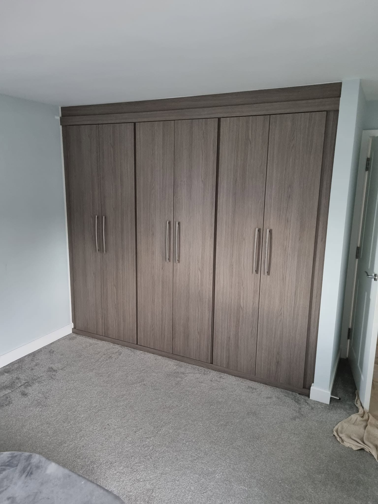
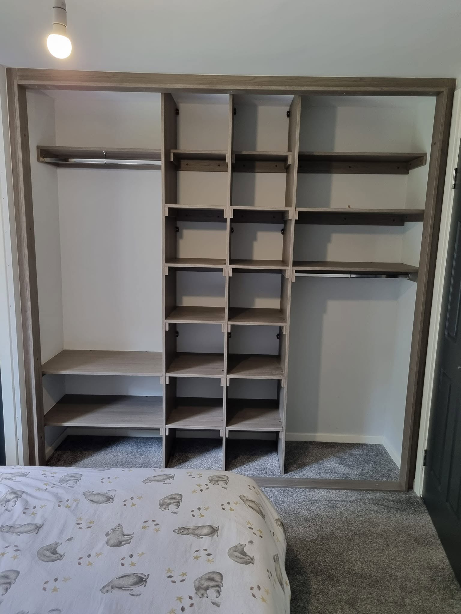

Floor-to-ceiling, wall-to-wall storage built into your room and finished to your brief. The classic bespoke wardrobe — measured, designed and hand-built for one home only.
A fitted wardrobe isn't a freestanding unit pushed against a wall. It's built into the room — scribed to the skirting, run tight to the ceiling and shaped around every quirk of the space. Done well, it looks like it was part of the house from the day it was built.
That's what we do at E.B.W. Every fitted wardrobe is designed from scratch around your room in Edinburgh, whether that's a Victorian tenement with high ceilings and cornicing, a new-build box room, or a loft conversion with sloping eaves. There's no standard carcass we start from. We start from your walls.
Off-the-shelf and flat-pack wardrobes force your room to fit their sizes. Bespoke works the other way around. We take every measurement on site, account for uneven walls and out-of-square corners, and draw the wardrobe to the millimetre.


E.B.W is a small Edinburgh workshop, not a national showroom chain. The person who visits your home to measure up is the same person who builds the wardrobe and fits it. Nothing is subcontracted out, and nothing is lost in a handover.
That also means the finish matters to us personally. Joints sit flush, doors line up, and the room is left clean and tidy when we leave — with a wardrobe that wasn't there before and nothing else disturbed.
Fitted wardrobes suit almost any bedroom, but they earn their keep most in alcoves and along full walls where every inch counts. If your room is tighter, sliding doors can save the space that hinged doors need. If you've a spare room to give over entirely, a walk-in wardrobe may be the better answer. Not sure which fits? Tell us about the space and we'll advise honestly.
Because every wardrobe is bespoke, the price depends on the size of the run, the finish you choose and the internal layout. Rather than guess, we come to see the room and give you a clear written quote with no obligation.
A typical project runs a few weeks from agreed design to installation, depending on the finish and current workload. Installation itself is usually completed in one to a few days on site.
Yes — that's exactly what bespoke fitted wardrobes are for. Sloped ceilings, chimney breasts, uneven period walls and out-of-square corners are all measured and drawn on site so the finished wardrobe fits perfectly.
Entirely. Doors, carcass, handles and internal layout are all specified to your brief — painted or sprayed in the colour you want, or in a timber finish. It's your wardrobe, so it's your choice.
Tell us about your room and we'll come to you for a free, no-obligation design consultation across Edinburgh.